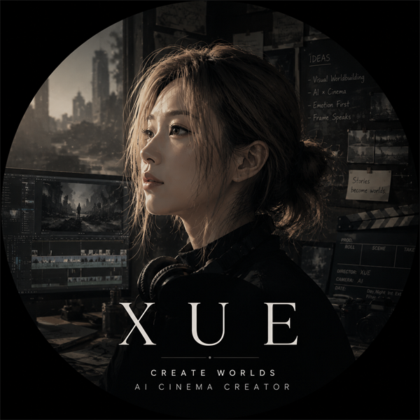

LANGUAGE
English & French
跨文化理解与多语言表达能力。
A DIGITAL STORY UNIVERSE
À travers d’innombrables univers, à la recherche d’une histoire qui n’a jamais été écrite.
Across countless realms, searching for a story never written.
背景音乐不会自动播放；你可以随时关闭。
XUE
Screenwriter · Director · Visual Explorer
从文字构建世界，
探索人工智能时代的影像叙事。

ARTIST STATEMENT
这里将记录我的 AI 数字漫剧、角色实验与尚未被完整讲述的世界。 AI 是工具，故事、情绪、节奏和审美选择仍然来自创作者。
当前文字为第一版示例，可在 data/site.js 中替换。
VISUAL UNIVERSE
角色、场景、服装、光线与情绪的片段。点击作品可放大查看。
ORIGINAL SERIES
以系列而不是单条视频组织作品，让人物、设定和故事持续生长。
CHARACTER ARCHIVE
人物并非独立立绘，而是故事里彼此牵引的坐标。
SELECTED COMMISSIONS
商业项目放在原创世界之后，作为创作能力与执行能力的延伸。
PROCESS
主题、冲突与情绪方向。
人物、服装、表情与一致性。
镜头、节奏与视觉叙事。
画面生成、动画、剪辑与声音。
ABOUT ME · MY STORY
毕业于华北水利水电大学， 学习英语与法语的经历， 让我逐渐建立起跨文化理解与表达能力。
成长环境中接触到的水利、建筑与工程知识， 培养了我对于空间结构、场景构建 和视觉秩序的感知。
十余年的网络文学阅读经历， 让我长期关注人物塑造、叙事结构 与世界观构建。
目前，我正在探索 AIGC 时代下 影视创作的新可能，尝试将人工智能融入 剧本创作、角色设计、视觉开发、 分镜规划与影像生成流程。
从文字到画面，从想象到世界。
我希望探索人工智能如何重新定义故事的创造方式。
BACKGROUND
LANGUAGE
跨文化理解与多语言表达能力。
NARRATIVE
长期浸润网络文学，关注人物、结构与世界观。
SPACE
来自建筑与工程环境的空间结构思维。
AI CINEMA
剧本、角色、分镜、视觉开发与影像生成。